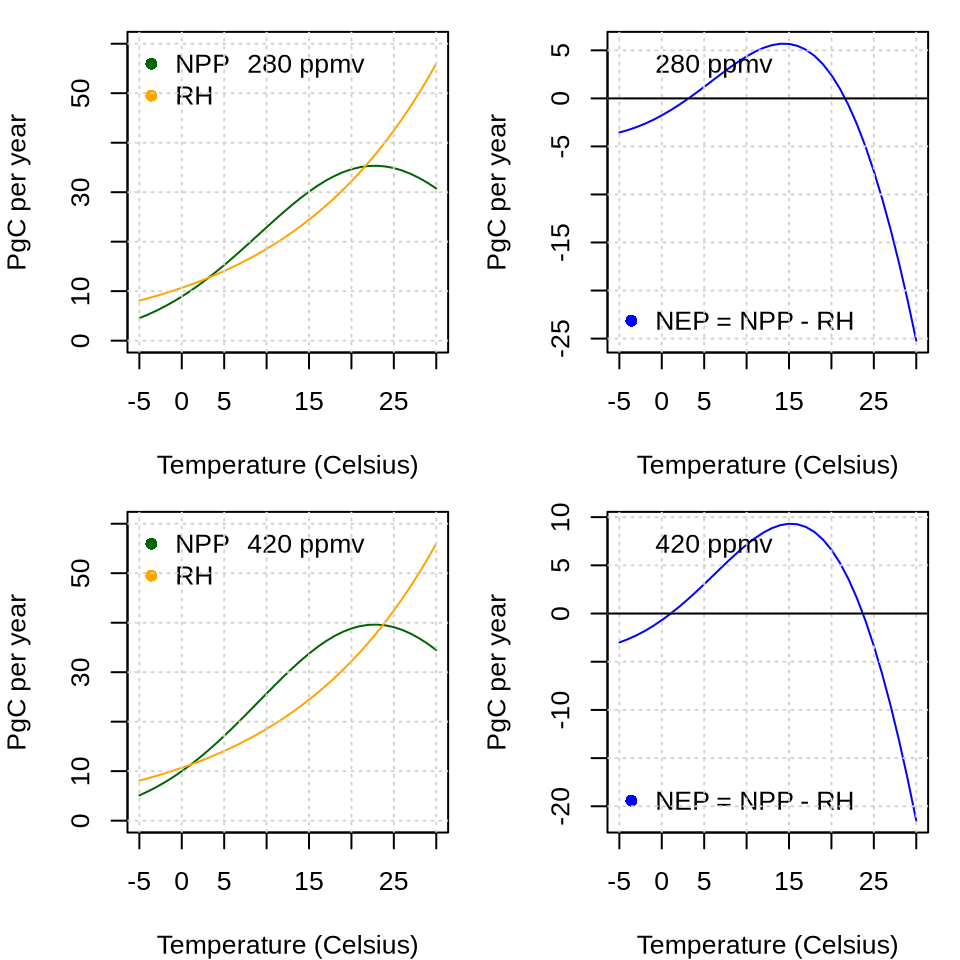
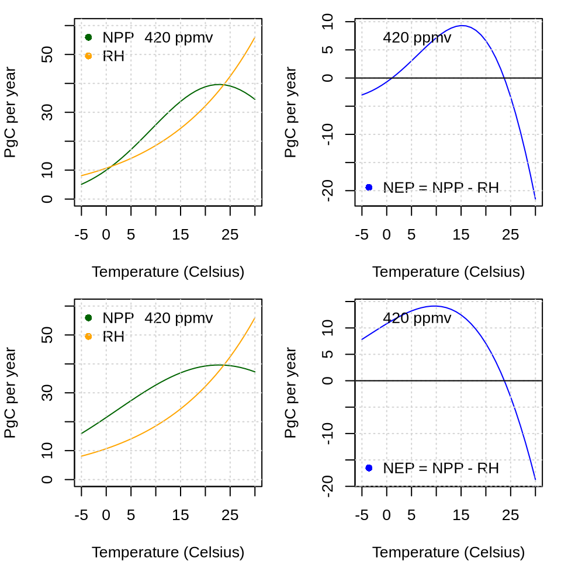
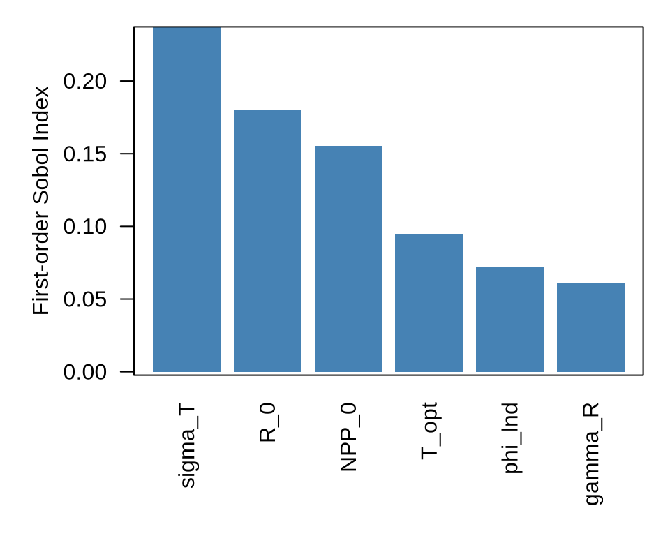
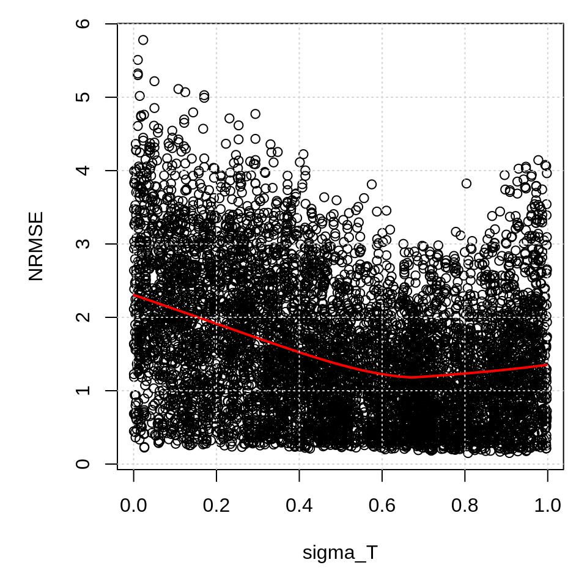
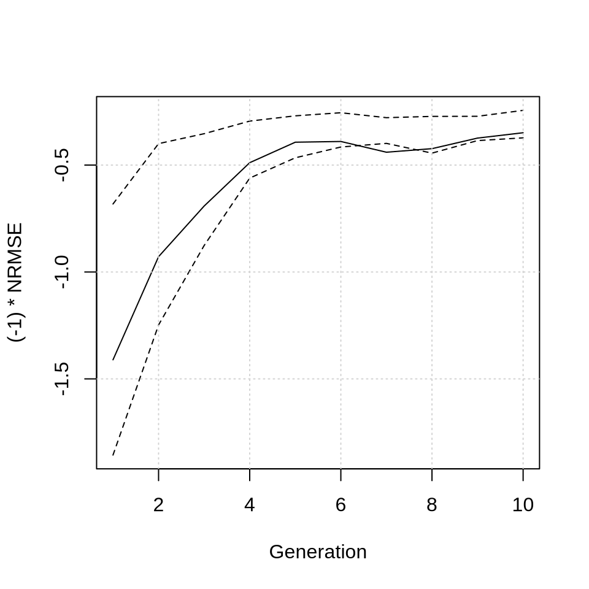

7 Week 7: Terrestrial Carbon Cycle
7.1 Terrestrial Carbon Fluxes
Net ecosystem productivity (NPP) is the difference between net primary productivity and heterotrophic respiration (R\(_H\)):
\[ NEP = NPP - R_H \] where NPP is the difference between gross primary productivity (GPP) and autotrophic respiration (R\(_A\)):
\[ NPP = GPP - R_A \]
In QUEST, NPP is expressed as a function of atmospheric CO\(_2\) concentration and temperature. The CO\(_2\) fertilization effect is simulated according to Amthor et al. (1995), while the temperature dependence is estimated using a Gaussian function. Combining both effects, the low-latitude NPP is estimated as:
\[ NPP_{lnd,L} = f_{lnd,L}NPP_0\left(1 + \phi_{lnd}\ln\left(\frac{C_{atm,ppmv}}{C_{ref}}\right)\right)\exp\left(-\frac{\left(T_{atm,L} - T_{opt}\right)^2}{2\sigma_T^2}\right) \]
Heterotrophic respiration is assumed to increase exponentially with temperature, consistent with Arrhenius-type formulations commonly used for soil carbon decomposition Lloyd 1994, using first-order Taylor approximation. The low-latitude soil respiration is estimated as:
\[ RH_L = C_{lnd,L}R_0\exp\left(\gamma_R\left(T_{atm,L} - T_{rh}\right)\right) \]
The tendency of the terrestrial carbon pool is then the difference of NPP and heterotrophic respiration. For the low latitudes:
\[ dC_{lnd,L} = NPP_{lnd,L} - RH_L \]
Let us plot NPP, RH, and NEP as a function of temperature and for two different atmospheric CO\(_2\) concentrations. Let us define a function that plots NPP and RH:
# Load the QUEST package:
library(quest)
# Set the path to the configuration files:
config.path <- "/global/teaching-project/sg5112000/shared_files/config"
# Load the configuration files:
config <- config_load(path = config.path)
# Load the initial values
state <- config$initial_values
# Load the parameter values
params <- config$params
fun_land <- function(state, params){
# Parameter values
NPP_0 <- params$NPP_0
f_lnd_L <- params$f_lnd_L
f_lnd_H <- params$f_lnd_H
phi_lnd <- params$phi_lnd
T_opt <- params$T_opt
sigma_T <- params$sigma_T
R_0 <- params$R_0
gamma_R <- params$gamma_R
C_ref <- params$C_ref
T_rh <- params$T_rh
# Initial values
T_atm_L <- state[["T_atm_L"]]
T_atm_H <- state[["T_atm_H"]]
C_atm <- state[["C_atm"]]
C_lnd_L <- state[["C_lnd_L"]]
C_lnd_H <- state[["C_lnd_H"]]
# Convert atmospheric C to ppmv
C_atm_ppmv <- C_atm / 2.124
T_atm_L <- seq(273 - 5, 273 + 30, 1)
# Net Primary Productivity (NPP)
NPP_lnd_L <- f_lnd_L * NPP_0 *
(1 + phi_lnd * log(C_atm_ppmv / C_ref)) *
exp(-(T_atm_L - T_opt)^2 / (2 * sigma_T^2))
# Heterotrophic respiration
RH_L <- C_lnd_L * R_0 * exp(gamma_R * (T_atm_L - T_rh))
secPerYear <- 86400 * 365.25
myRange <- range(c(NPP_lnd_L, RH_L) * secPerYear)
myRange <- c(0, 60)
plot(x = T_atm_L - 273, y = NPP_lnd_L * secPerYear, type = "l",
xlab = "Temperature (Celsius)",
ylab = "PgC per year",
ylim = myRange,
col = "darkgreen")
lines(x = T_atm_L - 273, y = RH_L * secPerYear, type = "l", col = "orange")
legend("topleft", col = c("darkgreen", "orange"), pch = 16, c("NPP", "RH"), bty = "n")
legend("top", c(paste(round(C_atm_ppmv), "ppmv")), bty = "n")
grid()
plot(x = T_atm_L - 273, y = (NPP_lnd_L - RH_L) * secPerYear, type = "l",
col = "blue",
xlab = "Temperature (Celsius)",
ylab = "PgC per year")
legend("topleft", c(paste(round(C_atm_ppmv), "ppmv")), bty = "n")
legend("bottomleft", "NEP = NPP - RH", pch = 16, col = "blue", bty = "n")
grid()
abline(h = 0)
}Let us now plot NPP, RH, and NEP for two different CO\(_2\) levels:
par(mfrow = c(2,2), mar = c(4,4,1,1))
fun_land(state, params)
state[["C_atm"]] <- 892.08 # PgC
fun_land(state, params)
Quiz Question 1: How does an increase in atmospheric CO\(_2\) concentration from preindustrial levels to present concentrations affect the equilibrium temperature at which the terrestrial carbon cycle switches from a carbon sink to a carbon source as temperature increases?
Let us now increase the parameter \(\sigma_T\) by 50% and assess how this will affect NEP.
par(mfrow = c(2,2), mar = c(4,4,1,1))
params$sigma_T <- 13.7096 # default value
fun_land(state, params)
params$sigma_T <- 13.7096 * 1.5 # increase by 50%
fun_land(state, params)
Quiz Question 2: How does the increase in \(\sigma_T\) by 50% affect the maximum strength of the carbon sink?
We can conclude that our terrestrial carbon fluxes are sensitive to changes in parameter values. In the next section we will conduct a global sensitivity analysis to quantify how the uncertainty of an input parameter affects model output.
7.2 Global Sensitivity Analysis
In this exercise, we assess how variations in model parameters affect model performance. Model performance is evaluated using a cost function that compares simulated outputs against target values for both the preindustrial and transient periods. The cost function quantifies the differences between simulated and target values using the normalized root mean square error (NRMSE).
Sobol sensitivity analysis is computationally expensive. To reduce computation time, we restrict the model to the coupled land–atmosphere system. Furthermore, we limit the simulation to a short period (1840–1850) and evaluate only the preindustrial climate state. These simplifications are made for educational purposes. A more comprehensive analysis would simulate the fully coupled system over a much longer period. Executing the code chunk below will take approximately 10 minutes. While the simulation is running, answer the questions that follow.
start_time <- Sys.time()
library(parallel)
library(sensitivity)
library(quest)
# Set the path to the configuration files:
config.path <- "/global/teaching-project/sg5112000/shared_files/config"
# Load the configuration files:
config <- config_load(path = config.path)
# Set the flags to what we want
config$flags$run_AirSeaCarbon <- FALSE
config$flags$run_atmosphere <- TRUE
config$flags$run_ocean <- FALSE
config$flags$run_npzd <- FALSE
config$flags$run_land <- TRUE
config$flags$run_sic <- FALSE
config$flags$run_icesheets <- FALSE
config$flags$anthropogenic_emissions <- FALSE
config$flags$prescribed_CO2 <- FALSE
config$flags$prescribed_seaice <- FALSE
config$flags$diagnose_carbonates <- FALSE
times <- seq(1840, 1850, by = 1)
# param_names_subset <- c("sigma_T", "T_opt", "R_0")
param_names_subset <- c("NPP_0", "T_opt", "phi_lnd", "R_0", "gamma_R", "sigma_T")
ncores <- as.integer(Sys.getenv("MC_CORES", "1"))
cat("Using cores:", ncores, "\n")
cl <- makeCluster(ncores)
parallel::clusterExport(
cl,
c("libPath_tutorial", "libPath_quest")
)
parallel::clusterEvalQ(cl, {
.libPaths(c(libPath_tutorial, libPath_quest))
library(quest)
})
parallel::clusterExport(cl, "config")
log_file <- "sobol_progress.log"
sobol_result <- calibr_sobol(config, times, param_names_subset, N = 1000, order = 1, seed = 1, cl)
saveRDS(object = sobol_result, file = "sobol_result.rds")
end_time <- Sys.time()
# Print elapsed time
print(end_time - start_time)While the code chunk above is running, let’s briefly recap the main theory. The sobol index is defined as:
\[ S_i = \frac{V(E(Y|X_i))}{V(Y)} \] Question: What is the meaning of the numerator?
Question: What is the meaning of the denominator?
Question: What measures the variance of the conditional means?
Question: What is the possible range of the Sobol index?
Question: If parameter A has a Sobol index of 0.5 and parameter B has a Sobol index of 0.1, can we conclude that parameter A has a greater influence on the model output than parameter B?
Question: In our analysis, the model output \(Y\) is the normalized root mean square error (NRMSE). What does a high Sobol index tell us about the influence of a parameter on model performance?
Once the code chunk above has finished executing, the results will be saved to sobol_result.rds. Load the saved results and plot the Sobol sensitivity indices.
data <- readRDS("sobol_result.rds")
S <- data$S$original
parameters <- rownames(data$S)
S <- data.frame(parameters, S)
S <- S[order(S$S, decreasing = TRUE), ]
# First versus Total
First <- data$S$original
parameters <- rownames(data$S)
Total <- data$V$original
Total <- Total[2:length(Total)]
# plot
par(mfrow = c(1,1), mar = c(6,5,1,1))
barplot(
height = S$S,
names.arg = S$parameters,
las = 2,
col = "steelblue",
main = NA,
ylab = "First-order Sobol Index",
border = NA
)
box()
Quiz Question 3: Which are the three most influential parameters?
Let us now create a scatter plot to explore the relationship between parameter values and model performance. The x-axis represents the parameter values, while the y-axis shows the corresponding normalized root mean square error (NRMSE), which measures model performance.
par(mar = c(5,5,1,1))
# 1. Extract the specific parameter and the output
x_param <- data$X[,"sigma_T"]
y_output <- data$y
# 2. Create the scatterplot
plot(x_param, y_output,
xlab = "sigma_T",
ylab = "NRMSE")
# 3. Add a smooth trendline (LOWESS) to see the shape of the relationship
lines(lowess(x_param, y_output), col = "red", lwd = 2)
grid()
Quiz Question 4: Why does this figure tell you that the parameter \(\sigma_T\) is a influential parameter?
7.3 Model Parameter Optimization
Using the results from the global sensitivity analysis, we can now calibrate the model using the most influential parameters. We will do this using a type of machine learning algorithm referred to as genetic algorithm. Parameter optimization is computationally expensive. To reduce computation time, we apply the same protocol as for the Sobol analysis: we restrict the model to the coupled land–atmosphere system, limit the simulation to a short period (1840–1850) and evaluate only the preindustrial climate state. These simplifications are made for educational purposes. A more comprehensive analysis would simulate the fully coupled system over a much longer period. The code below to optimize the paramters \(\sigma_T\), \(R_0\), and \(NPP_0\):
library(GA)
# Set the path to the configuration files:
config.path <- "/global/teaching-project/sg5112000/shared_files/config"
# Load the configuration files:
config <- config_load(path = config.path)
# Set the flags to what we want
config$flags$run_AirSeaCarbon <- FALSE
config$flags$run_atmosphere <- TRUE
config$flags$run_ocean <- FALSE
config$flags$run_npzd <- FALSE
config$flags$run_land <- TRUE
config$flags$run_sic <- FALSE
config$flags$run_icesheets <- FALSE
config$flags$anthropogenic_emissions <- FALSE
config$flags$prescribed_CO2 <- FALSE
config$flags$prescribed_seaice <- FALSE
config$flags$diagnose_carbonates <- FALSE
times <- seq(1840, 1850, by = 1)
param_names_subset <- c("sigma_T", "T_opt", "R_0")
run_esm_ga <- function(x_scaled) {
calibr_optim(x_scaled, times, config, param_names_subset)
}
# Bounds in normalized space
lower <- rep(0, length(param_names_subset))
upper <- rep(1, length(param_names_subset))
# Run GA
ga_result <- ga(
type = "real-valued",
fitness = run_esm_ga,
lower = lower,
upper = upper,
popSize = 100,
maxiter = 10,
run = 10
)
best_x_scaled <- ga_result@solution
colnames(best_x_scaled) <- param_names_subset
best_x <- list()
for(i in param_names_subset) {
pmin <- config$params_calib[[i]]$min
pmax <- config$params_calib[[i]]$max
pscaled <- best_x_scaled[,i]
best_x[i] <- pscaled * (pmax - pmin) + pmin
}
print("optimized Values")
print(best_x)
saveRDS(object = ga_result, file = "ga_result.rds")Quiz Question 5: What is the optimized value for sigma_T?
Quiz Question 6: Inspect the code. How large is the population size?
Quiz Question 7: How many generations did you compute?
Quiz Question 8: How many times did the model run?
Let us now plot the results.
data <- ga_result@summary
my.range <- range(c(data[,"mean"], data[,"q1"], data[,"q3"]))
plot(data[,"mean"], type = "l",
ylim = my.range,
xlab = "Generation",
ylab = "(-1) * NRMSE")
lines(data[,"q3"], lty = 2)
lines(data[,"q1"], lty = 2)
grid()
Quiz Question 9: What does this figure show you?
7.4 Eigenanalysis
Let us now investigate how the terrestrial carbon cycle influences the equilibrium climate state. In these experiments, we dynamically couple the following modules:
- Atmosphere
- Ocean
- Air-sea carbon exchange
- Land (on/off)
For this tutorial, we disable the NPZD module to reduce computation time.
7.4.1 Terrestrial carbon cycle turned off
Let’s setup the model configuration.
rm(list = ls())
# Load the QUEST package:
library(quest)
# Set the path to the configuration files:
config.path <- "/global/teaching-project/sg5112000/shared_files/config"
# Load the configuration files:
config <- config_load(path = config.path)
# Set the flags to what we want
config$flags$run_AirSeaCarbon <- TRUE
config$flags$run_atmosphere <- TRUE
config$flags$run_ocean <- TRUE
config$flags$run_npzd <- FALSE
config$flags$run_land <- FALSE
config$flags$run_sic <- FALSE
config$flags$run_icesheets <- FALSE
config$flags$anthropogenic_emissions <- FALSE
config$flags$prescribed_CO2 <- FALSE
config$flags$prescribed_seaice <- FALSE
config$flags$diagnose_carbonates <- FALSENow we spin up the model for 10000 years.
times <- seq(-10000, 0, by = 1)
output <- core_run_esm(config = config, times = times)
saveRDS(output, "output_W07_config_01.rds")
# Create initialization file from this spinup
utils_write_new_init(
input_file = "output_W07_config_01.rds",
output_file = "config_init_W07_config_01.R",
final_year = TRUE
)Now we conduct the eigenanalysis for this model configuration.
# Get the spun up state variables
state_eq <- source("config_init_W07_config_01.R")$value
# Select state variables that will be perturbed
select_variables <- c("C_atm", "T_atm_L", "T_atm_H", "T_ocn_SL", "T_ocn_SH", "T_ocn_DL", "T_ocn_DH")
# Find the equilibria
equilibria <- eval_equilibria(config, state_eq, select_variables = select_variables, n_starts = 100)
# Conduct eigenanalysis
stability_results <- eval_eigenvalues(config,
equilibria_dimensionless = equilibria$dimensionless,
state_eq = state_eq,
state_min_active = equilibria$state_min_active,
state_max_active = equilibria$state_max_active,
delta_time = 50
)
stability_results_land_off <- stability_results
saveRDS(stability_results_land_off, "W07_stability_results_land_off.rds")7.4.2 Terrestrial carbon cycle turned on
Let us repeat the same workflow but for terrestrial carbon cycle turned on.
config$flags$run_land <- TRUE
times <- seq(-10000, 0, by = 1)
output <- core_run_esm(config = config, times = times)
saveRDS(output, "output_W07_config_02.rds")
# Create initialization file from this spinup
utils_write_new_init(
input_file = "output_W07_config_02.rds",
output_file = "config_init_W07_config_02.R",
final_year = TRUE
)Now we conduct the eigenanalysis for this model configuration.
# Get the spun up state variables
state_eq <- source("config_init_W07_config_02.R")$value
# Select state variables that will be perturbed
select_variables <- c("C_atm", "T_atm_L", "T_atm_H", "T_ocn_SL", "T_ocn_SH", "T_ocn_DL", "T_ocn_DH")
# Find the equilibria
equilibria <- eval_equilibria(config, state_eq, select_variables = select_variables, n_starts = 100)
# Conduct eigenanalysis
stability_results <- eval_eigenvalues(config,
equilibria_dimensionless = equilibria$dimensionless,
state_eq = state_eq,
state_min_active = equilibria$state_min_active,
state_max_active = equilibria$state_max_active,
delta_time = 50
)
stability_results_AirSeaCarbon_on <- stability_results
saveRDS(stability_results_AirSeaCarbon_on, "W07_stability_results_land_on.rds")7.4.3 Comparing the Jacobians
Let us now compare the results from both simulations
# land turned on:
land_on <- readRDS("W07_stability_results_land_on.rds")
# land turned off:
land_off <- readRDS("W07_stability_results_land_off.rds")
# Jacobian
delta_jacobian <- land_on$equilibrium_1$jacobian - land_off$equilibrium_1$jacobian
print(round(land_on$equilibrium_1$jacobian, 3))
print(round(land_off$equilibrium_1$jacobian, 3))
print(round(delta_jacobian, 3))Quiz Question 10: How does land affect the response of atmospheric carbon to an atmospheric carbon perturbation?
7.4.4 Comparing the eigenmodes
# Eigenvalues
delta_lambda <- land_on$equilibrium_1$eigenvalues[1] - land_off$equilibrium_1$eigenvalues[1]
print(land_on$equilibrium_1$eigenvalues[1])
print(land_off$equilibrium_1$eigenvalues[1])
print(delta_lambda)
# Timescales
delta_timescales <- land_on$equilibrium_1$timescales[1] - land_off$equilibrium_1$timescales[1]
print(land_on$equilibrium_1$timescales[1])
print(land_off$equilibrium_1$timescales[1])
print(delta_timescales)Quiz Question 11: How does land affect the time scale of the dominant eigenmode?
# dominant eigenvector land on
domVec_land_on <- land_on$equilibrium_1$eigenvectors[, 1]
print(domVec_land_on)
# dominant eigenvector land off
domVec_land_off <- land_off$equilibrium_1$eigenvectors[, 1]
print(domVec_land_off)Quiz Question 12: Which variable contributes most to the dominant eigenmode when land is turned off?
Quiz Question 13: How does adding land affect the balance between restoring and amplifying processes in the vicinity of the equilibrium?
7.5 Anthropogenic Emissions
Let us now simulate how the terrestrial carbon cycle affects the climate system during the industrial period.
rm(list = ls())
# Load the QUEST package:
library(quest)
# Set the path to the configuration files:
config.path <- "/global/teaching-project/sg5112000/shared_files/config"
# Load the configuration files:
config <- config_load(path = config.path)
# Set the flags to what we want
config$flags$run_AirSeaCarbon <- TRUE
config$flags$run_atmosphere <- TRUE
config$flags$run_ocean <- TRUE
config$flags$run_npzd <- FALSE
config$flags$run_land <- FALSE
config$flags$run_sic <- FALSE
config$flags$run_icesheets <- FALSE
config$flags$anthropogenic_emissions <- TRUE
config$flags$prescribed_CO2 <- FALSE
config$flags$prescribed_seaice <- TRUE
config$flags$diagnose_carbonates <- FALSE7.5.1 Land turned off
# Get the spun-up state
state_eq <- source("config_init_W07_config_01.R")$value
config$initial_calues <- state_eq
# flags
config$flags$run_land <- FALSE
# Run model and save output
times <- seq(1800, 2024, by = 1)
output <- core_run_esm(config = config, times = times)
saveRDS(output, "output_W07_config_01_transient.rds")
output <- readRDS("output_W07_config_01_transient.rds")
utils_plot(config, output, variables = c(
"anthr_emissions", "Carbon_total", "C_atm_ppmv",
"T_atm_global", "C_lnd_L", "C_lnd_H"
), my.xlim = c(1800, 2024), PNGfile = FALSE)7.5.2 Land turned on
# Get the spun-up state
state_eq <- source("config_init_W07_config_02.R")$value
config$initial_calues <- state_eq
# Flags
config$flags$run_land <- TRUE
# Run model and save output
times <- seq(1800, 2024, by = 1)
output <- core_run_esm(config = config, times = times)
saveRDS(output, "output_W07_config_02_transient.rds")
output <- readRDS("output_W07_config_02_transient.rds")
utils_plot(config, output, variables = c(
"anthr_emissions", "Carbon_total", "C_atm_ppmv",
"T_atm_global", "C_lnd_L", "C_lnd_H"
), my.xlim = c(1800, 2024), PNGfile = FALSE)Quiz Question 14: How does the land affect the amount of carbon in the atmosphere?